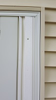
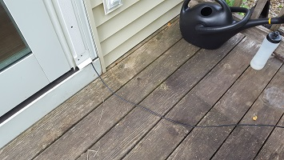
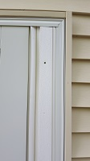
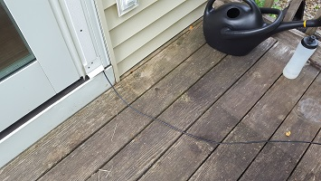
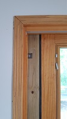
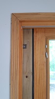
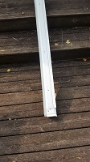
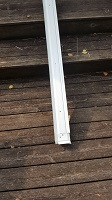

{kind=link}

I started of running coax through the patio door. The problem here in Iowa is quite obvious that flies, especially mosquitoes, will enter the house. Needless to say that this is undesirable.
To solve this issue I fitted a treated 2x4 lumber board in the track of the patio door. It's being held in place by a notch at the top. I used garage molding, normally used to seal the sides of garage doors, to give it a weatherproofed seal from the outside and also to make the board look nicer. Stainless steel screws ensure that things stay looking nicely by avoiding rust.
The coax itself goes through the bottom notch out on the board. Since there are two garage moldings on the board, one for the left and one for the right side, they overlap each other. The right side has a gab between the 2x4 and the molding. I used this to run the coax between them down to the bottom of the 2x4 where it comes out nicely without disturbing the seal.
This construction looked really nice and worked well. No rain got into the house, even with pretty strong thunderstorms. Flies stayed outside. People could open and close the patio door without having to worry about smashing the coax cable. I even could lock the door easily with a board between the door handle and the door frame (see video). The only big drawback was the cold Iowa winters. The cold did seep through the cracks which I didn't like and thus I ended up not operating during the winter month. Because of this I finally drilled a hole through the wall and installed a nice entry box for the cables.
 



 

 



{kind=link}
{kind=link}
{kind=link}
{kind=link}